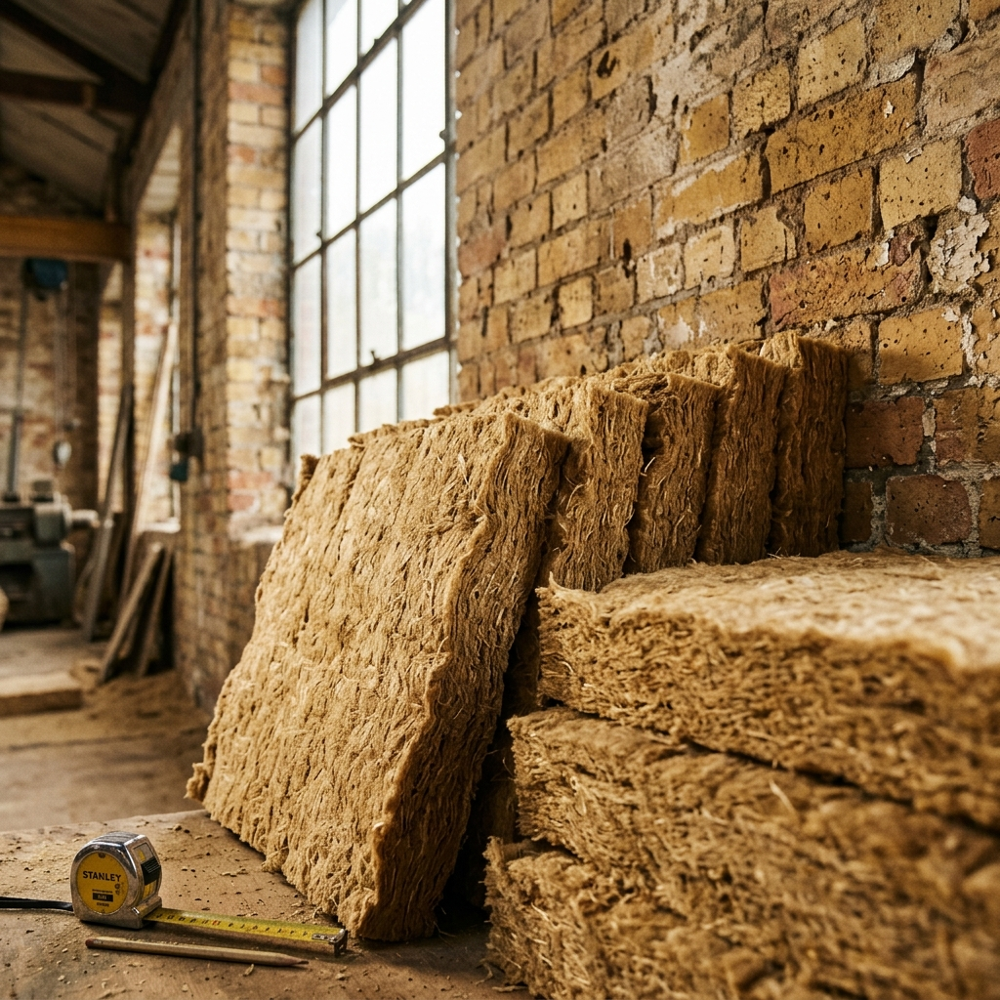

Act A — The Reference Installation Problem
The building materials industry runs on reference installations.
Before a specifier will include a product in a set of construction drawings, they want to know where it has been installed, how it performed, and who they can call. Before a procurement officer will approve an unfamiliar product for a project, they want a completed project with a similar substrate, a similar climate zone, and a paper trail. Before an insurer will underwrite a building that contains a novel material, they want evidence of a track record.
This is completely rational. Buildings are long-lived assets. Specifying an unproven material into a building envelope is a professional liability risk that few architects or engineers are willing to take on the basis of a data sheet and a startup founder’s assurances, no matter how compelling the chemistry.
The result is a structural catch-22 that has blocked the commercialization of sustainable building materials for decades: you cannot get a reference installation without a specifier, and you cannot get a specifier without a reference installation. The innovative material stays in the lab, or in a pilot project so carefully hand-held that it leaves no reusable evidence trail, while buildings continue to be insulated with products that have been on the market for forty years.
This catch-22 is a thin market problem. On one side: manufacturers of certified, code-compliant sustainable materials who cannot find specifiers willing to take the first step. On the other: builders and specifiers who have a specific technical problem that the novel material could solve better than any alternative — but who have no way to discover this without an intermediary who holds knowledge of both sides simultaneously.
The match that would solve both problems does not happen through normal procurement channels. Normal procurement channels are designed for known materials, known suppliers, and known performance histories. They are not designed for the first installation.
The following is a fictional account of how a MarketForge-powered platform engineers that first installation — and what it unlocks.
Act B — The Story
Aveline
Aveline Garneau had spent four years developing Kelpotek’s core product: a seaweed-based insulation batt manufactured from farmed North Atlantic Ascophyllum nodosum, processed to remove salinity, compressed into standard-format batts with a kraft paper facing, and treated with a mineral fire retardant that brought the product to OBC Part 9 compliance.
The technical properties were genuinely advantageous for specific applications. The material’s natural hygroscopic behaviour — its ability to absorb and release moisture vapour without degrading — made it uniquely suited to older building envelopes where vapour permeability was critical. In heritage clay-brick buildings, where standard mineral wool or rigid foam could trap moisture and accelerate brick spalling, Kelpotek’s product managed vapour movement in a way that was actively beneficial to the substrate.
Aveline had the data. She had the certification — a third-party assessment issued by the NRC Construction Research Centre in Ottawa confirming Part 9 compliance under the 2020 National Building Code. She had a manufacturing line in Rimouski capable of producing 12,000 square metres of product per month.
She had zero completed commercial installations.
She had tried every channel she knew. She had exhibited at Construct Canada. She had sent samples to eight architectural firms, three of which responded. She had attended two sustainability procurement workshops and come away with business cards she had emailed twice without reply. She had applied for a product demonstration grant from NGen Canada and been told her project didn’t fit the current funding call.
The problem was not that her product was bad. The problem was that there was no efficient mechanism to find the specifier for whom the product was not just acceptable but demonstrably superior — the project where the moisture management profile was the deciding factor, not just a differentiator.
Derek
Derek Osei had a project in Hamilton he was starting to lose sleep over.
The building was a three-storey former industrial warehouse on Barton Street East, circa 1910 — solid clay-brick masonry, large factory windows, exposed timber structure — being converted to twelve units of mixed-income residential by a non-profit housing developer. The developer had a net-zero commitment, a Heritage Hamilton compliance requirement, and a budget that had been approved based on a construction estimate that was now twelve months old.
The insulation specification was the problem. The interior face of the clay-brick wall needed to be insulated from the inside without a vapour barrier — Heritage Hamilton had refused permission to alter the exterior, and a standard vapour barrier on the interior face would have reversed the existing vapour drive through the wall, trapping moisture in the brick and risking freeze-thaw damage within two winters.
The heritage-appropriate solution was a vapour-open insulation system. The standard product for this application was blown cellulose or sheep’s wool — both code-compliant, both vapour-open, both available. The problem: neither achieved the R-value the net-zero model required without a wall assembly thickness that would consume floor area the developer wasn’t willing to give up.
Derek’s energy modeller had identified a specification that would work: a vapour-open insulation with an R-value of at least R-18 per 140mm of installed thickness, and a vapour permeance of at least 10 ng/(Pa·s·m²) to ensure adequate drying potential toward the interior. He had checked every product on the Canadian market he knew about. Nothing met all three criteria simultaneously.
He had not heard of Kelpotek.
The Platform
The Sustainable Materials Exchange was a sector-specific MarketForge deployment, operated as a public-private partnership between NGen Canada — the Advanced Manufacturing supercluster — and the Canada Green Building Council. Its CommonContext contained a curated database of certified sustainable building materials, maintained against current NBC and OBC versions, including performance characteristics beyond what appeared on standard product data sheets.
The matching profiles on the supply side included not just R-values and certifications, but the specific application conditions under which each material conferred a performance advantage over conventional alternatives. Kelpotek’s profile — entered by Aveline’s team — included a flag: Heritage masonry applications with vapour-open requirement and R-18+ at 140mm constraint.
The matching profiles on the demand side were compiled differently. Specifiers and project managers registered project briefs — not product requests, but problem descriptions: the substrate, the climate zone, the performance target, the regulatory constraint, the budget bracket, and any heritage or procurement conditions. The platform’s semantic engine matched problem descriptions to certified product profiles, with particular attention to cases where the demand-side constraint was unusual enough to eliminate conventional alternatives.
Derek’s project brief — registered through the platform after his energy modeller mentioned it at a Passive House Canada event — was matched to Kelpotek within 48 hours.
The match score was high for a specific reason: not just that Kelpotek’s R-value met the target, but that the platform’s CommonContext had flagged that Kelpotek’s vapour permeance at R-18 in 140mm exceeded the 10 ng threshold by a margin that would satisfy the Heritage Hamilton requirement without a separate variance application. The knowledgebase had cross-referenced the Heritage Hamilton technical guidance document — a 2019 update to their masonry conservation standards — against the product performance data.
Derek hadn’t known that document existed. Aveline hadn’t known about the Heritage Hamilton variance process. Neither had known about the other.
The Generative Match Story
The platform generated what it called a Technical Suitability Narrative — a document addressed jointly to Derek’s project team and to Aveline’s commercial team at Kelpotek. It was not a product pitch and it was not a project specification. It was a shared technical analysis: a description of how the product’s specific performance characteristics interacted with the project’s specific constraints, using the project’s own performance targets and the NRC certification data side by side.
The Narrative identified four things neither party had assembled together before.
First, the vapour permeance profile. Kelpotek’s measured impermeance at full installed thickness was 13.2 ng/(Pa·s·m²) — above Derek’s 10 ng threshold, and above the minimum specified in the Heritage Hamilton 2019 guidance. This eliminated the need for a variance application that would have added six weeks and approximately $8,000 in professional fees.
Second, the fire rating. The NRC assessment had tested the mineral retardant treatment to CAN/ULC-S102 — a flame-spread standard that Derek’s energy modeller had assumed the product wouldn’t meet, which was why he hadn’t investigated seaweed-based products at all. It met it.
Third, the freight logistics. Rimouski to Hamilton by rail was a ten-day lead time. The platform’s CommonContext had a freight logistics module — a partnership with a Quebec-based sustainable freight aggregator — that could arrange consolidated shipment with two other Ontario projects scheduled for the same production window, bringing the per-metre freight cost below the cellulose alternative.
Fourth, a provenance note. The seaweed was farmed in the Gulf of St. Lawrence under a DFO aquaculture licence. The product qualified for the LEED v4 regional materials credit at a 25% weighting — which closed a gap in the project’s LEED certification pathway that the developer’s sustainability consultant had flagged as at risk.
Derek read the Narrative with his energy modeller on a Tuesday afternoon. He called Aveline on Thursday.
Their first conversation lasted forty minutes. At the end of it, they had agreed on a site visit schedule and a sample panel mockup. The mockup would satisfy Heritage Hamilton’s requirement for a material approval prior to full specification.
Eight months later, the Barton Street building was under construction. Kelpotek’s product was on the wall on all three floors.
The installation photos went into the CommonContext’s completed-project database. Two specifiers who had been tracking the product from the sidelines submitted project briefs the following week.
The first wall was the hardest one.
Act C — The Structural Reading
This story is fictional. Aveline Garneau and Derek Osei do not exist, and Kelpotek Building Materials is not a real company. But the market failure they illustrate is documented in building materials commercialization research across Canada, the EU, and Australia — and it is one of the most consistently cited barriers to sustainable construction at scale.
The sustainable materials market is thin in a specific and structural way that differs from the other thin markets discussed in this series.
The reference installation bottleneck is a participation sequencing failure. The market cannot function until a first transaction occurs, but the conditions that make a first transaction possible — a specifier willing to accept the technical risk, a project where the product is demonstrably superior, a cost structure competitive with alternatives — require a match so specific that it cannot be found through general procurement channels. This is a market that needs a more targeted matching process before it can function at all.
Offering complexity is the dominant matching barrier. A seaweed-based insulation product is not substitutable for standard mineral wool in most applications. It is not substitutable for anything in a small number of applications where its specific vapour management profile is decisive. The challenge is not marketing the product broadly — it is finding the projects where the product is the right answer, which requires knowledge that neither the manufacturer nor the typical specifier holds individually but that can be assembled from existing technical data.
This is precisely what the CommonContext architecture is designed for. The domain knowledge required to match Kelpotek to Derek’s project was not invented — it existed in the NRC certification report, the Heritage Hamilton technical guidance, the LEED v4 regional materials credit rules, and the freight aggregator’s logistics database. None of these documents were in the same place. The CommonContext curates them into a single reasoning layer.
The trust architecture matters differently here. In markets like legal services or disability employment, trust between participants is the central barrier. In sustainable materials, the trust challenge is between the specifier and the material — a kind of institutional trust that the building codes and certification bodies are supposed to address but don’t fully resolve in practice. The Technical Suitability Narrative — the Generative Match Story in this context — functions as a technical due diligence document, not just a human connection facilitator. It converts the certification data into project-specific evidence, which is what the specifier actually needs to make a decision.
The completed-project database is the second product. Every installation creates an evidence record that reduces the matching friction for the next installation. This is why the sustainable materials thin market cannot be solved by a one-time matchmaking intervention — it requires a sustained intermediary that accumulates evidence and makes it available to the next specifier. The platform’s value increases with every completed project logged.
This is also the natural funding model for a sector-specific MarketForge deployment: the manufacturer pays a commercialization fee per completed project, which funds the ongoing maintenance of the knowledge base that reduces the friction for the next manufacturer at the same market entry stage. NGen Canada, as an advanced manufacturing supercluster funder, is a natural sponsor for exactly this kind of shared commercialization infrastructure.
The first wall is always the hardest. The platform exists to make the first wall findable.
The characters, companies, and specific project details in this story are fictional. NGen Canada, the Canada Green Building Council, the National Research Council of Canada, Heritage Hamilton, the Ontario Building Code, and the LEED v4 certification system are real institutions and programs. Their standards, requirements, and general procedures are accurately characterized as of the date of publication.
DeeperPoint is developing the open-source tools that underpin platforms like the one described here. Learn more about the thin market problem, the MarketForge platform, and who these tools are designed to serve.